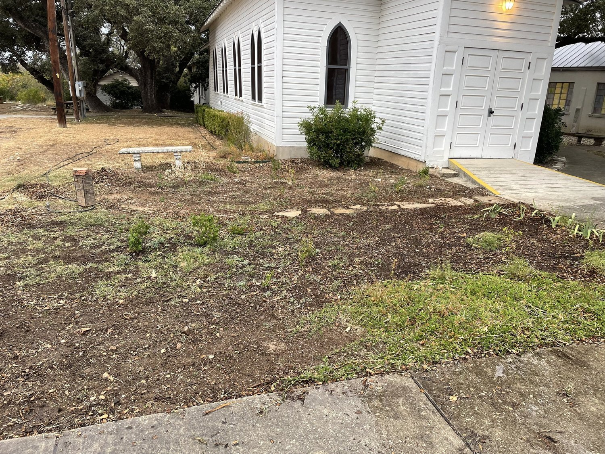
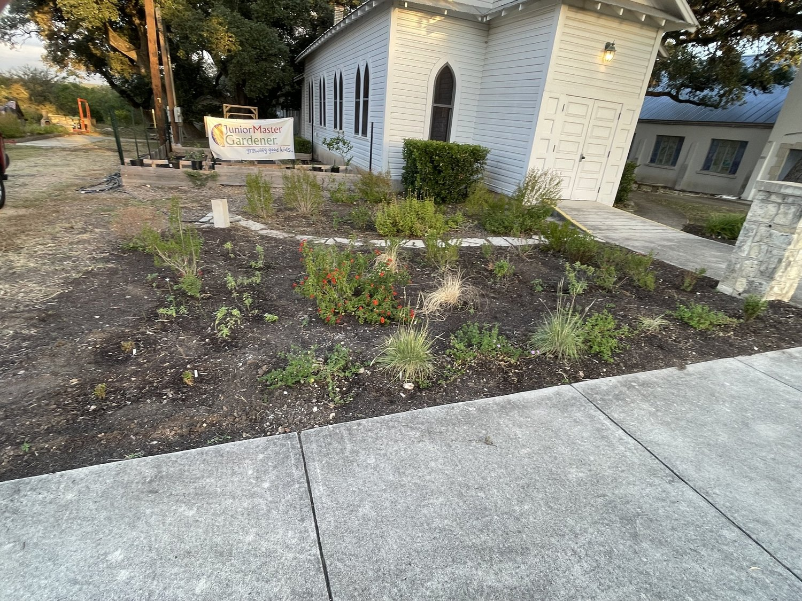
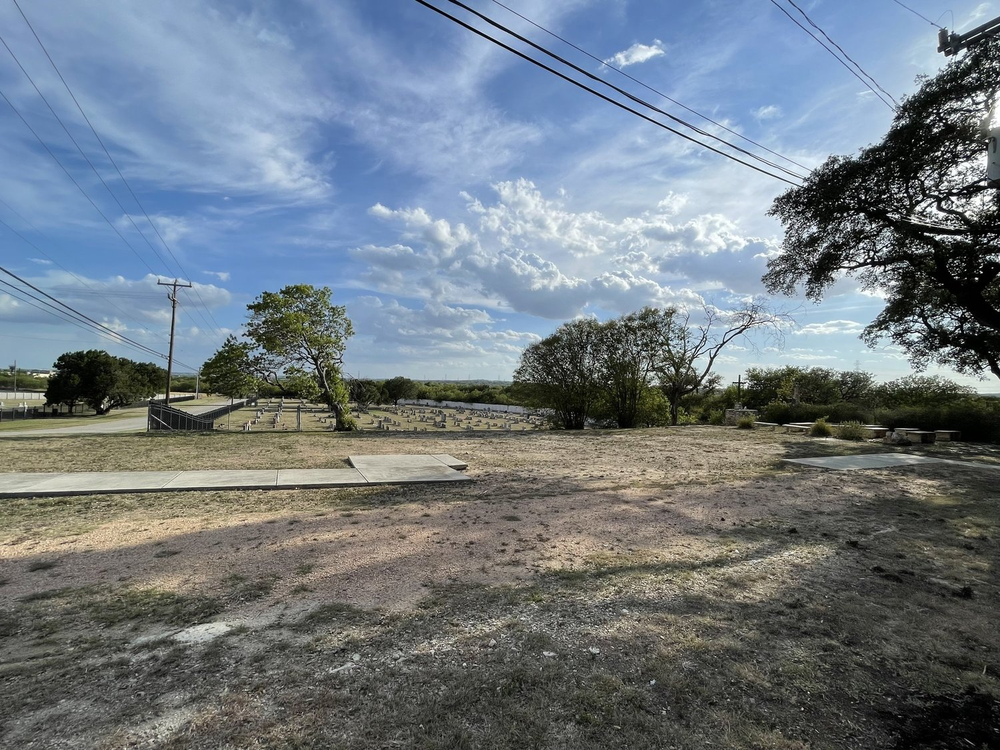
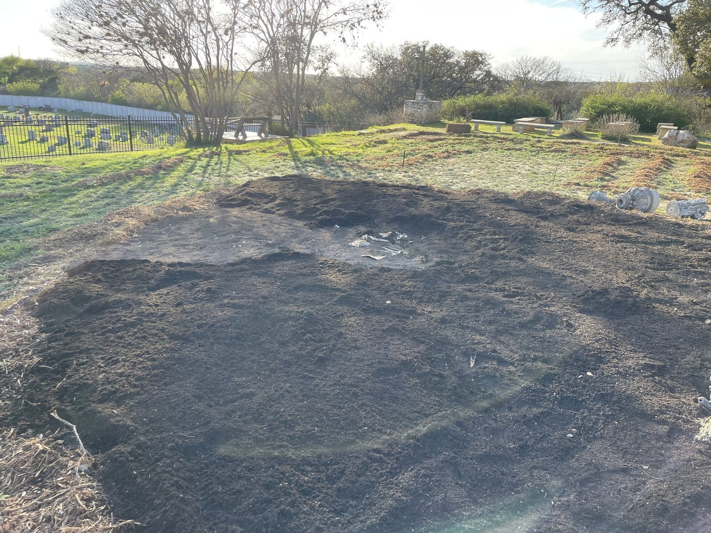
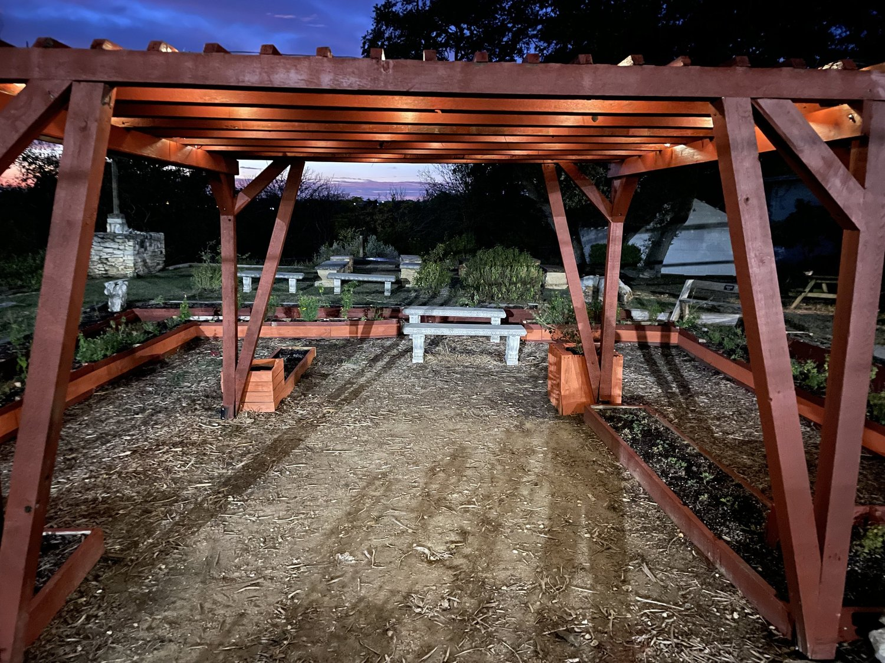

What Are The Gardens?
Grown in Texas, Rooted in Research.
Located in northwest Bexar County, The Gardens at Zion are on Edward’s Plateau soil—thin, heavy clay and gravelly. The Gardens represent “best practices” in Texas gardening as defined by TAMU-College Station: build good soil, plant correct plants in the correct location, minimal watering, minimal chemicals for weed & pest control.
The beds for the gardens are 6–8” of extremely well amended soil; the raised beds were outlined by 8–10” of single shredded mulch. Most of the plants were propagated from plants that I found growing here, either by seed or cuttings. The idea was, if the plants were thriving here, then those were the plants that I wanted in The Gardens.
The empty space in front of the historic Chapel was primarily weeds and “dirt”. It is now filled with well adapted plants: salvia, lantana, and wildflowers. The area to the northwest of the Chapel was an empty lot that once had a house and, later, portable buildings. It is now a Children’s Garden, a garden with a fountain as its centerpiece, and a covered pergola—with solar lights for night illumination.
Visualizing the Evolution

The empty space in front of the historic Chapel (before).

Now filled with well-adapted salvia, lantana, and perennials.

Looking out across the Northwest Bexar County landscape.

The fountain centerpiece surrounded by thriving native flora.

Laying down well-amended soil and single shredded mulch rings.

The covered pergola illuminated by solar lights for night viewing.